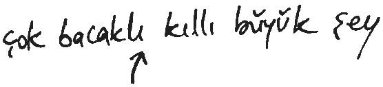
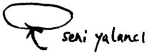
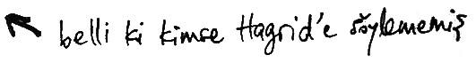
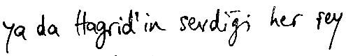

GİRİŞ
KİTAP HAKKINDA
“Fantastik Canavarlar Nelerdir, Nerede Bulunurlar?” yılların yolculuk ve araştırmasının meyvesini temsil ediyor. Şimdi dönüp de geçmişe bakınca, odasında Cörkpâre parçalayarak saatler geçiren çocuğu görüyorum ve onun gelecekteki yolculuklarını kıskanıyorum: En karanlık balta girmemiş ormanlardan en ışıklı çöllere, dağların doruklarından bataklıklara, Cörkpâre'yle kaplı kir pas içindeki o çocuk yıllar geçtikçe ilerideki sayfalarda anlatılan canavarların izini sürecekti. Beş kıtada inleri, oyukları ve yuvaları ziyaret ettim, yüz ülkedeki sihirli canavarların tuhaf alışkanlıklarını gözledim, güçlerine tanık oldum, güvenlerini kazandım ve kimi zaman da kamp çaydanlığımla onları kovaladım.
Fantastik Canavarlar'ın ilk baskısı, bana kendi yayınevi için yetkin bir sihirli yaratıklar kitabı yazmayı düşünüp düşünmeyeceğimi sorma nezaketi gösteren Obscurus Kitapları'nın sahibi Mr. Augustus Worme tarafından 1918'de sipariş edilmiştir. Ben o zaman sıradan bir Sihir Bakanlığı çalışanıydım ve hem haftada iki Sickle'lık içler acısı ücretimin artması, hem de tatillerimi yeni sihirli türler arayarak dünyayı dolaşmakla geçirme şansının üzerine balıklama atladım. Gerisi ise artık yayıncılık tarihine geçti: Fantastik Canavarlar bu kitapla 52. baskısını yapmış bulunuyor.
Bu giriş, kitabın 1927'deki ilk yayım tarihinden beri haftalık olarak posta torbama gelen soruların en sık rastlanan birkaçını cevaplandırmayı amaçlıyor. Bunların ilki ve en temel olanı —"canavar" nedir?

CANAVAR NEDİR?
“Canavar" tanımı yüzyıllar boyunca tartışmalara yol açmıştır. Bu durum Büyüzooloji'ye yeni başlayan bazı öğrencileri hayrete düşürecek olsa da, bir an durup üç sihirli yaratık türünü göz önüne alacak olursak, sorun biraz daha netlik kazanır.
Kurtadamlar vakitlerinin çoğunu insan olarak geçirirler (ister büyücü olsun, ister Muggle). Ama ayda bir kere, öldürmeye niyetli ve hiçbir insani vicdana sahip olmayan vahşi, dört bacaklı canavarlara dönüşürler.
At-adamlann alışkanlıkları insanlarınkine benzemez; yabanıl doğa içinde yaşar, giyinmeyi reddeder, hem büyücülerden hem de Muggle'lardan uzak durmayı tercih ederler. Oysa zekâları onlarınkine denktir.
İnsan görünüşüne sahip olan, iki bacakları üzerinde yürüyen ifritlere gelince, kendilerine birkaç basit kelime öğretilebilse de, en kalın kafalı at-adam kadar bile zekâları yoktur ve şaşılacak ölçüdeki olağanüstü kuvvetlerinin dışında, kendilerine özgü hiçbir sihir gücüne sahip değildirler.
Şimdi kendimize soruyoruz: Bu yaratıklardan hangisi "varlıktır" –yani. yasal haklara layık, sihir dünyasının yönetilmesinde söz hakkı olacak bir yaratıktır– ve hangisi bir canavardır?
Hangi sihirli yaratığın canavar diye adlandırılması gerektiğine yönelik ilk çabalar son derece üstünkörüydü.
On beşinci yüzyılda Büyücüler Konseyi Başkanı olan Burdock Muldoon sihirle uğraşan topluluğun iki bacağı üzerinde yürüyen her üyesine bundan böyle varlık statüsü verirken, diğerlerinin hepsinin canavar olarak kalacağını resmen bildirmişti. Dostça duygular içinde, yeni sihir yasalarını tartışmak için bütün varlıkları bir zirve toplantısında büyücülerle buluşmaya davet etti ve büyük bir umutsuzluk içinde, evdeki hesabın çarşıya uymadığını fark etti. Toplantı salonu, yanlarında bulabildikleri kadar iki-bacaklı yaratık getiren cincücelerle ağzına kadar doluydu. Bathilda Bagshot Sihir Tarihi'nde şöyle anlatıyor:
"Sırga'ların gaklaması, Kahşin'lerin inleyip sızıldanması ve Fuphup'ların amansız, kulak zarı delici şarkıları yüzünden pek az şey işitilebiliyordu. Büyücüler ve cadılar önlerindeki kâğıtlara bakmaya çalışırken, envai çeşit cinperiyle peri kıkır kıkır gülüp vıdı vıdı ederek onların başlarının etrafında fırıl fırıl dönüyordu. On kadar ifrit ellerindeki sopalarla odayı darmadağın ederken, cadalozlar süzülerek dolaşıp yiyecek çocuk arıyordu. Konsey başkanı toplantıyı açmak için ayağa kalktı, bir Dombaz pisliği öbeğine basarak kayıp düştü ve lanet okuyarak salonu koşa koşa terk etti."
Anlaşıldığı kadarıyla, sihirli yaratıkların sadece iki bacağa sahip olması onların büyücü yönetimi işleriyle ilgileneceğini garanti altına almıyordu. Hem üzülen hem de kızan Burdock Muldoon, bir daha sihirli topluluğun büyücü olmayan üyelerini Büyücüler Konseyi'ne dahil etmemeye yemin etti.
Muldoon'un halefi Madam Elfrida Clagg, diğer sihirli yaratıklarla daha sıkı bağlar kurma umuduyla varlıkları yeniden tanımlama çabasında bulundu. Varlıkların, insan dilini konuşan yaratıklar olduğunu bildirdi. Bu nedenle de, dertlerini Konsey üyelerine anlatabilenlerin hepsi bir sonraki toplantıya katılmaya davet olundu. Ne var ki yine sorun çıktı. Cincücelerin birkaç basit cümle öğrettiği ifritler daha önce olduğu gibi yine toplantı salonunun altını üstüne getirmeye koyuldu. Carcarlar, Konsey'in iskemle bacakları çevresinde koşturarak, uzanabildikleri her bileği parçaladı. Bu arada (Muldoon'un önderliği altında, iki bacak üzerinde yürümedikleri, havada süzüldükleri gerekçesiyle toplantıya katılmaları yasaklanan) hayaletler toplantıya kalabalık bir heyetle katıldı ama daha sonra Konsey'in, "yaşayanların ihtiyaçlarını utanmazca ölülerin dileklerinin önüne çıkarması" dedikleri tavır nedeniyle tiksinti içinde oradan ayrıldılar. Muldoon yönetiminde canavar diye sınıflandırılıp Madam Cragg'in yönetiminde ise varlık olarak tanımlanan at-adamlarsa, suyun üstünde oldukları zaman denizhalkı dili dışında bir dille konuşamayan denizhalkının dışlanmasını protesto etmek için toplantıya katılmayı reddetti.
Sihirle uğraşan topluluğun çoğunun kabul ettiği tanımlar, ancak 1811'de bulundu. Yeni atanan Sihir Bakanı Grogan Stump, sihirle uğraşan topluluğun yasalarını anlamaya yetecek ve bu yasaları şekillendirme sorumluluğunu kısmen üstlenebilecek her yaratık'ın varlık olduğunu resmen bildirdi. İfrit temsilcileri cincüceler yokken sorguya çekildi ve onlara söylenen hiçbir şeyi anlamadıklarına hükmedildi; bu yüzden de, iki bacak üzerinde yürümelerine rağmen, canavar olarak sınıflandırıldılar; denizhalkı, çevirmenler aracılığıyla ilk kez varlık olmaya davet olundu; periler, cinperiler ve yercüceleri, insanı andıran görünüşlerine rağmen kararlı bir şekilde canavar kategorisine dahil edildi.
Elbette ki mesele bununla kalmadı. Hepimiz, Muggle'ların canavar olarak sınıflandırılması yolunda kampanya yürüten aşırı uçları biliriz; hepimiz at-adamların varlık statüsünü reddettiklerinin ve canavar olarak kalma talebinde bulunduklarının farkındayız; bu arada kurtadamlar yıllar boyu Canavar ile Varlık bölümleri arasında gitti geldi; bu kitap yazıldığı sırada Yaratık Bölümü'nde Kurtadam Destek Hizmetleri için bir büro varken, Kurtadam Kaydı ve Kurtadam Yakalama Birimi de Canavar Bölümü'ne bağlı. Bazı son derece zeki yaratıklar, kendi vahşi yapılarını alt etmeyi beceremedikleri için canavar olarak sınıflandırılmış durumda. Akromantulalar ile Mantikorlar mantıklı konuşma yetisine sahiptir ama onlara yaklaşan her insanı yiyip yutmaya kalkarlar. Sfenks sadece bulmacalar ve tekerlemelerle konuşur, yanlış cevap verildiğinde de şiddete başvurur.
Bu sayfalarda, bir canavarın sınıflandırılması konusunda süregelen bir belirsizlik söz konusuysa, bunu o yaratığın maddesinde belirttim.
Şimdi de, sohbet Büyüzooloji'ye geldiğinde cadılarla büyücülerin en sık sordukları soruya gelelim: Muggle'lar niye bu yaratıkları fark etmez?
MUGGLE'LAR FANTASTİK CANAVARLARIN NE KADAR FARKINDA? KISA BİR TARİHÇE

Çoğu büyücüye şaşırtıcı gelecek ama Muggle'lar bizim onca zamandır saklamak için var gücümüzle uğraştığımız sihirli ve korkunç yaratıklardan her zaman habersiz değillerdi. Ortaçağ'da Muggle sanat ve edebiyatına bir göz atarsak, şimdi hayali olduğuna inandıkları birçok yaratığın o sıralar gerçek sayıldığını görürüz. Ejderha, grifin, tek boynuzlu at, anka kuşu, at-adam – bunlar ve daha nicesi, dönemin Muggle eserlerinde temsil edilirler (çoğu kez neredeyse gülünç derecede hatalı olsalar bile).
Ancak, o dönemin Muggle hayvan kitapları daha yakından incelenirse, çoğu sihirli canavarın ya Muggle'ların dikkatinden tamamen kaçtığı ya da başka bir şeyle karıştırıldığı görülür. Worcestershire'dan Fransisken bir keşiş olan Peder Benedict tarafından yazılmış ve günümüze bir parçası kalmış bir elyazmasını inceleyelim:
Bugün Şifalı Nebatat Bahçesi'nde seyahat ederken, fesleğeni bir yana ittim de devasa boyutta bir Gelincik keşfettim. Gelinciklerin her daim yaptığı gibi koşup saklanacağına üzerime atladı, beni zemine fırlattı ve pek gayrıtabii bir gazapla, "Çık şurdan, keltoş!" dedi. Sonra burnumu öyle bir ısırdı ki, burnum saatlerce kanadı. Frer, konuşan bir Gelincik gördüğüme inanmaya hiç heveskâr değildi ve bana acaba Peder Boniface'nin Şalgam Şarabı'yla demlendim mi diye sordu. Burnum hâlâ şiş olduğu ve kanadığı için, Akşam Duası'ndan muaf tutuldum.
Belli ki, Muggle dostumuzun ortaya çıkardığı şey aslında bir gelincik değil, büyük bir ihtimalle en sevdiği avın, yani yercücelerinin peşine düşmüş bir Carcar'mış.
Yarım yamalak anlamak, çoğu kez cehaletten daha tehlikelidir. Şuna şüphe yok ki Muggle'ların sihir korkusu, şifalı ot bahçelerinde neler pusuda bekliyor diye duydukları dehşetle büsbütün artmış. O sıralarda Muggle'ların büyücülere ettiği zulüm, daha önce rastlanmadık bir düzeye ulaşmıştı. Ejderhalarla Hipogrifler gibi canavarların görülmesi de bu Muggle isterisine katkıda bulunuyordu.
Bu kitabın amacı, büyücülerin gizlenmek zorunda kaldıkları karanlık günleri tartışmak değil. Burada bizi ilgilendiren, Muggle'lar gün gelir de sihir diye bir şey olmadığı kanısına varırsa bizim gibi saklanmak zorunda kalacak olan bu efsanevi canavarların kaderleri.
Uluslararası Büyücüler Konfederasyonu 1692 yazındaki meşhur zirve toplantılarında bu konuyu görüştü. Yedi haftaya varan bir süre boyunca, tüm uluslardan büyücüler arasındaki bazen sert bir hal alan tartışmalar, belalı bir konu olan sihirli yaratıklara adandı. Muggle'ların gözünden kaç türü kaçırabiliriz, bunlar hangileri olmalı? Onları nerede ve nasıl saklamalıyız? Tartışma fırtınalı bir şekilde sürerken, kimi yaratıklar kaderlerinin tayin edildiği gerçeğinden habersizdi, kimi ise tartışmaya katkıda bulunuyordu.
Sonunda bir anlaşmaya varıldı. Boyutları ejderhalardan Bundimun'lara kadar değişen yirmi yedi tür. hayaller dışında asla var olmadıkları yanılgısını yaratacak şekilde, Muggle'lardan saklanacaktı Bir sonraki yüzyılda büyücüler saklama yöntemlerine eskisinden daha fazla güvenmeye başlayınca, bu sayı artırıldı. 1750'de, Uluslararası Büyücülük Sırları Tüzüğü'ne 73'üncü Madde konuldu ki bugün de dünyanın her yanındaki büyücü bakanlıkları buna uyar:
Her büyücü hükümeti kendi bölgesinin sınırları dahilinde yaşayan bütün sihirli canavarların, varlıkların ve ruhların saklanması, bakımı ve denetiminden sorumlu olacaktır. Böyle bir yaratığın Muggle topluluğuna zarar vermesi ya da onların dikkatini çekmesi halinde, o ülkenin büyücü hükümeti Uluslararası Büyücüler Konfederasyonu tarafından disiplin cezasına çarptırılacaktır.
SİHİRLİ CANAVARLARIN SAKLANMASI
73.Madde'nin ilk kez yürürlüğe girdiği günden beri ara sıra ihlal edildiğini inkâr etmenin bir yararı yok. Yaşı ileri İngiliz okurlar, 1932'de başına buyruk bir Gal Yeşili ejderhanın güneş banyosu yapan Muggle'larla dolu kalabalık bir plaja tepeden daldığı İlfracombe Olayı'nı hatırlar. Neyse ki o sırada orada tatilde olan bir büyücü ailesi sayesinde muhtemel ölümler önlendi. Vakit kaybetmeden İlfracombe sakinlerine bu yüzyılın en büyük toplu Hafıza Büyüsü'nü uygulayarak felaketin kıyısından dönülmesini sağlayan aile, daha sonra Birinci Sınıf Merlin Nişanı'yla ödüllendirildi.
Uluslararası Büyücüler Konfederasyonu, bazı ülkeleri 73'üncü Madde'yi tekrar tekrar ihlal ettikleri için para cezasına çarptırmak zorunda kaldı. Tibet ve İskoçya, bu maddeyi en ısrarla ihlal eden ülkelerden ikisi. Muggle'lar o kadar sık Yeti görüyordu ki, Uluslararası Büyücüler Konfederasyonu dağlara kalıcı bir Uluslararası Görev Gücü yerleştirmek zorunda kaldı. Bu arada dünyanın en büyük Kelpi'si de Loch Ness'te bir türlü ele geçirilemiyor ve resmen bir şöhret sarhoşluğuna kapılmışa benziyor.
Bu talihsiz kazalara rağmen biz büyücüler kendimizi iyi bir iş başardığımız için tebrik edebiliriz. Günümüz Muggle'larının büyük çoğunluğunun, atalarının onca korktuğu sihirli canavarlara inanmayı reddettiğinden kuşku yok. Dombaz pisliklerini ya da Yangoz izlerini fark eden Muggle'lar bile (bu yaratıkların arkalarında bıraktığı her tür izin saklanabileceğini sanmak budalalık olur) en sudan, sihirdışı açıklamayla tatmin olmuşa benziyorlar. Eğer bir Muggle kuzeye doğru uçan bir Hipogrif görür de bunu bir başkasına itiraf etmek gibi bir akılsızlıkta bulunursa, büyük ihtimalle onun sarhoş ya da "kaçık" olduğuna inanılır. Bu her ne kadar söz konusu Muggle açısından bir haksızlıkmış gibi görünse de, kazığa bağlanıp yakılmaktan ya da köyün ördek havuzunda boğulmaktan iyidir.
Öyleyse sihirle uğraşan topluluk fantastik canavarları nasıl saklıyor?
Neyse ki bazı türlerin Muggle'ların dikkatinden kaçınmak için pek büyücü yardımına ihtiyaçları yok. Tebo, Gizilgen ve Kabuluk gibi yaratıkların kendilerine ait son derece etki kamuflaj yöntemleri var ve Sihir Bakanlığı'nın onlar adına duruma müdahale etmesine henüz hiç gerek kalmadı. Sonra, akıllı ya da doğuştan utangaç oldukları için her ne pahasına olursa olsun Muggle'larla temastan kaçınan canavarlar var – örneğin, tek boynuzlu at, Aybuzağı ve at-adam. Bazı sihirli yaratıklarsa Muggle'ların ulaşamayacağı yerlerde yaşar – örneğin Borneo'nun balta girmemiş ve haritalarda yer almayan ormanlarının derinliklerini mesken edinmiş Akromantula ile, sihire başvurmadan ulaşılması imkânsız dağ doruklarına yuva kuran anka kuşu. Son olarak, ki bunlar en sık rastlananlarıdır, bir Muggle'ın dikkatini çekmeyecek kadar küçük, hızlı ya da kendilerini sıradan hayvanlarmış gibi yutturmakta usta canavarlarımız var – Çizbürü, Cızkıpır ve Krup bu kategoriye girer.
Gene de ister kasıtlı ister kasıtsız olsun, Muggle gözlerine bile görünen birçok canavar mevcut, Sihirli Yaratıkların Düzenlenmesi ve Denetimi Dairesi'ne asıl iş çıkartan da bunlar. Sihir Bakanlığı'nın ikinci en büyük dairesi olan bu daire, gözetimi altındaki birçok türün değişen ihtiyaçlarını farklı şekillerde ele alır.
Güvenli Yaşam Ortamları
Belki de sihirli yaratıkların saklanmasındaki en önemli adım, güvenli yaşam ortamları yaratmaktır. Muggle-püskürtücü büyüler, onların at-adamlarla tek boynuzlu atların yaşadığı ormanlara ve deniz halkının kullanımına ayrılmış göllerle nehirlere girmesin, önler. Beş Ayaklar gibi uç örnekler söz konusu olduğunda ise, bütün bir bölge işaretlenemez hale getirilir.
Bu güvenli alanlardan bazıları, sürekli büyücü gözetimi altında tutulmalıdır: örneğin, ejderha koruma bölgeleri. Tek boynuzlu atlarla denizhalkı kendi kullanımlarına ayrılmış bölgelerde büyük bir memnuniyetle kalırken, ejderhalar, koruma bölgeleri sınırları dışında av aramaya çıkmalarına yarayan her fırsatı kullanırlar. Bazı durumlarda Muggle-püskürtücü büyüler işlemez, çünkü canavarın kendi güçleri onları iptal eder. Söz konusu bu canavarlar, hayattaki tek amacı insanları kendisine çekmek olan Kelpi ile, avlamak için insan arayan Pogrebin'dir.
Satış ve Yetiştirme Denetimleri
Bir Muggle'ın normalden büyük ya da tehlikeli sihirli canavarlardan birini görüp de dehşete kapılması ihtimali, onların yetiştirilmesine ve yavruları ile yumurtalarının satılmasına konan ağır cezalar yüzünden artık çok azalmıştır. Sihirli Yaratıkların Düzenlenmesi ve Denetimi Dairesi, fantastik canavarlar ticaretini sıkı bir takibe almıştır. 1965 Deneysel Yetiştirme Yasağı, yeni türlerin yaratılmasını yasadışı kılmıştır.
Görüş Silme Büyüleri
Sokaktaki büyücü de sihirli hayvanların saklanmasında kısmen rol oynar. Örneğin, Hipogrif sahibi olanlar yasalara göre, onu görebilecek herhangi bir Muggle'ın görüşünü bozmak için canavarı bir Görüş Silme Büyüsü'yle efsunlamakla yükümlüdür. Genellikle etkileri çabuk geçtiğinden, Görüş Silme Büyüleri her gün tekrarlanmalıdır.
Hafıza Büyüleri
Olabileceğin en kötüsü olup da bir Muggle görmemesi gereken bir şeyi gördüğünde, belki de en yararlı onarım aracı Hafıza Büyüsü'dür. Bu büyü söz konusu canavarın sahibi tarafından yapılabilir ama fark edilme durumu ciddi boyutlardaysa, Sihir Bakanlığı tarafından eğitimli bir Unutturucu ekibi de gönderilebilir.
Yanlış Bilgilendirme Bürosu
Yanlış Bilgilendirme Bürosu, yalnızca en berbat sihirli-Muggle çatışmalarına karışır. Bazı sihirli felaketler ya da kazalar, bir dış yetkilinin yardımı olmaksızın Muggle'lar tarafından açıklanamayacak kadar açıktır. Yanlış Bilgilendirme Bürosu böyle bir durumda, olay için inanılır bir sihirdışı açıklama bulmak üzere doğrudan doğruya Muggle başbakanıyla temasa geçer. Bu büronun Muggle'ları Loch Ness kelpisinin fotoğraflarından oluşan tüm kanıtların sahte olduğuna ikna etme yolundaki yılmak bilmez çabaları, bir zamanlar son derece tehlikeli görünen bir durumu kurtarmada biraz ilerleme kaydedilmesini sağlamıştır.
BÜYÜZOOLOJİ NEDEN ÖNEMLİDİR?
Yukarıda belirtilen önlemler Sihirli Yaratıklann Düzenlenmesi ve Denetimi Dairesi tarafından yapılan işin boyutu ve kapsamı hakkında yalnızca bir ipucu verir. Geriye, hepimizin içten içe cevabını bildiğimiz soruyu cevaplamak kalır: Neden, topluluk ve bireyler olarak, sihirli canavarları, hatta yabani olanlarını ve ehlileşemeyenlerini de korumaya ve saklamaya çalışıyoruz Cevap ise, elbette şudur: Gelecek cadı ve büyücü kuşaklarının da bizim ayrıcalığımıza sahip olarak, onların tuhaf güzelliklerinin ve güçlerinin keyfini çıkartabilmelerini sağlamak için.
Bu kitabı, dünyamızda yaşayan fantastik canavarların zenginliğine sadece bir giriş olarak sunuyorum. İlerideki sayfalarda yetmiş beş tür tanımlanmıştır ama bu yıl yeni bir tanesi keşfedileceğinden, “Fantastik Canavarlar Nelerdir, Nerede Bulunurlar?”ın gözden geçirilmiş elli üçüncü baskısı gerekli hale gelecek. Bu arada, sadece bu kitabın sayfalarını karıştıran genç cadı ve büyücü kuşaklarının benim sevdiğim fantastik canavarlar konusunda daha fazla bilgi ve anlayışa sahip olacaklarını düşünmenin bile bana büyük zevk verdiğini ekleyeyim.
SİHİR BAKANLIĞI SINIFLANDIRMASI
Sihirli Yaratıkların Düzenlenmesi ve Denetimi Dairesi bütün bilinen canavarlar, yaratıklar ve ruhların sınıflandırmasını yapar. Bunlar, bir yaratığın tehlike derecesini bir bakışta algılayacak bir rehber sunar. Sınıflandırmanın beş kategorisi aşağıdaki gibidir:

Sihir Bakanlığı Sınıflandırması (S.B. S.):
XXXXX
Büyücü katili olduğu bilinenler / eğitmesi ya da evcilleştirilmesi imkânsız
XXXX
Tehlikeli / uzman bilgisi gerektirir / usta büyücüler idare edebilir
XXX
Yeterli düzeydeki büyücüler ilgilenmeli
XX
Zararsız / evcilleştirilebilir
X
Sıkıcı
Bazı durumlarda belirli bir canavarın sınıflandırılması için bir açıklamanın gerekli olduğunu düşündüm ve bu yüzden dipnotlar ekledim.